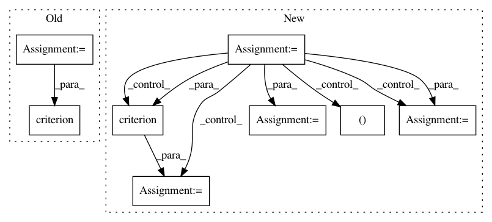

031392ff2cbb5703558d17a676a456521f754190,mnist/main.py,,train,#Any#,67
Before Change
batch_data_t = batch_data_t.cuda()
batch_targets_t = batch_targets_t.cuda()
batch_data = Variable(batch_data_t, requires_grad=False)
batch_targets = Variable(batch_targets_t, requires_grad=False)
for i in range(0, training_data.size(0), BATCH_SIZE):
optimizer.zero_grad()
batch_data.data[:] = training_data[i:i+BATCH_SIZE]
batch_targets.data[:] = training_labels[i:i+BATCH_SIZE]
loss = criterion(model(batch_data), batch_targets)
loss.backward()
loss = loss.data[0]
optimizer.step()
print("Epoch: {} [{}/{} ({:.0f}%)]\tLoss: {:.4f}".format(epoch,
After Change
batch_data = torch.FloatTensor(opt.batchSize, 1, 28, 28)
batch_targets = torch.LongTensor(opt.batchSize)
if cuda:
batch_data, batch_targets = batch_data.cuda(), batch_targets.cuda()
// create autograd Variables over these buffers
batch_data, batch_targets = Variable(batch_data), Variable(batch_targets)
for i in range(0, training_data.size(0)-opt.batchSize+1, opt.batchSize):
start, end = i, i+opt.batchSize
optimizer.zero_grad()
batch_data.data[:] = training_data[start:end]
batch_targets.data[:] = training_labels[start:end]
output = model(batch_data)
loss = criterion(output, batch_targets)
loss.backward()
loss = loss.data[0]
optimizer.step()
print("Train Epoch: {} [{}/{} ({:.0f}%)]\tLoss: {:.4f}"
In pattern: SUPERPATTERN
Frequency: 3
Non-data size: 8
Instances
Project Name: OpenNMT/OpenNMT-py
Commit Name: 031392ff2cbb5703558d17a676a456521f754190
Time: 2016-12-15
Author: soumith@fb.com
File Name: mnist/main.py
Class Name:
Method Name: train
Project Name: hunkim/PyTorchZeroToAll
Commit Name: 55b880469ced115de9949d5d25ff835dabbb2caa
Time: 2017-11-08
Author: hunkim@gmail.com
File Name: 12_2_hello_rnn.py
Class Name:
Method Name: